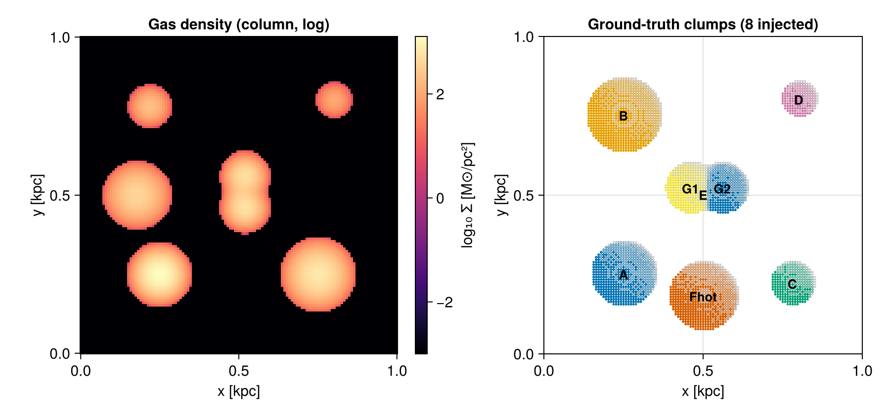
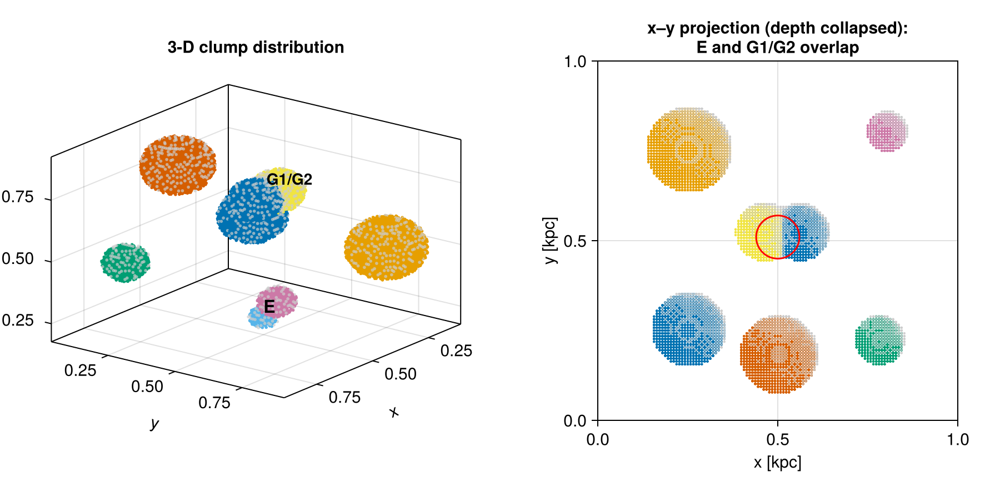
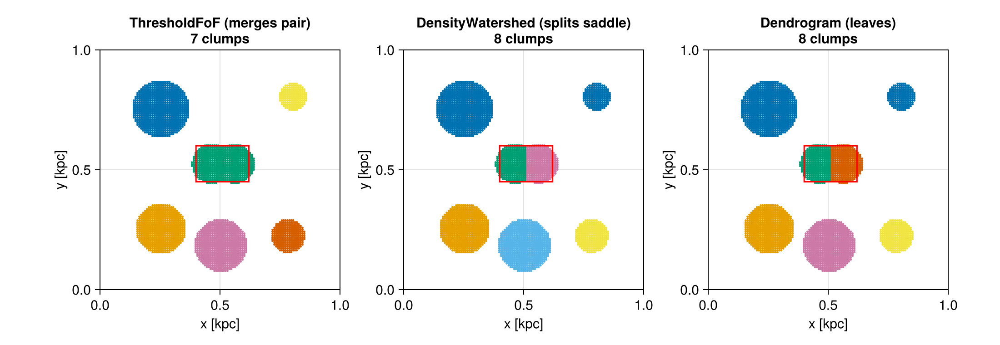
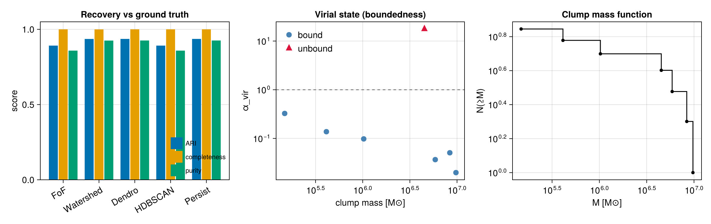
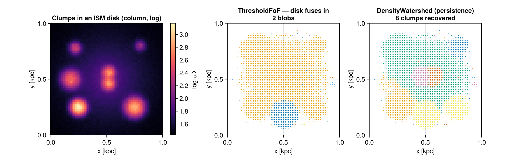
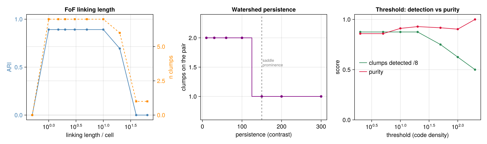

Clump Finding — a synthetic, ground-truth example
This page is a self-contained, data-free worked example for the structure finder (clumpfind). It builds a small Mera simulation from scratch — a real HydroDataType + PartDataType on a self-consistent unit system, no RAMSES files — whose clump population is known exactly. Because the ground truth is known, every finder and every feature can be both exercised and scored (Adjusted Rand Index, completeness, purity, recovered mass, virial state). The same field drives the accuracy test test/54_clumpfind_synthetic_tests.jl, which runs in CI on every platform.
synthetic_clumps, save_synthetic_clumps and load_synthetic_clumps are part of Mera (source: src/functions/synthetic_clumps.jl).
Get the data
The generator is deterministic, so you can either regenerate the identical field locally or download the prebuilt dataset (≈1.8 MB, LZ4-compressed Mera/JLD2). Both need only using Mera.
using Mera
# Option A — regenerate the identical field locally (no download):
F = synthetic_clumps()
gas, particles, truth = F.gas, F.particles, F.truth
# Option B — download the prebuilt dataset once (cached in `dir`), then load it:
D = load_synthetic_clumps(tempdir(); download=true)
gas, particles, truth = D.gas, D.particles, D.truthThe stored gas / particles are ordinary Mera data objects: every Mera verb (getvar, projection, clumpfind, …) works on them unchanged. Write the file yourself with save_synthetic_clumps(dir).
The field
Eight clumps are injected into a 128³ grid in a 1 kpc box (Gaussian gas overdensities; matching particle bags; plus a two-component kinematic stream for the phase-space finder):
- A–E — five isolated, self-gravitating (cold) clumps spanning ~2 dex in mass — the bread-and-butter case and the mass-function spectrum.
- Fhot — a massive but kinematically hot clump (σ = 28 km/s): spatially obvious yet gravitationally unbound — the boundedness/virial test case.
- G1 + G2 — two cores sharing one envelope, ~0.1 kpc apart — the deblending / substructure test case that single-threshold friends-of-friends cannot split.

Left: the gas column density (note the G1+G2 "peanut" at centre). Right: the eight injected ground-truth clumps, coloured by id.
The data and finders are fully 3-D
The figures above collapse the box along z for display, but the field is a genuine 3-D volume and every finder runs in three dimensions. The clumps sit at different depths — in particular clump E (z ≈ 0.25) lies almost directly under the G1/G2 pair (z ≈ 0.75), so they overlap in the x–y projection yet are distinct in 3-D:

Left: the clumps in the 3-D volume. Right: the x–y projection — E and G1/G2 (red circle) land on the same sky position. A 3-D finder separates them by depth; a 2-D connected-component search on the projection would merge them. test/54 asserts exactly this.
Run every finder and score it
clump_recovery compares a finder's per-cell labelling against the known truth labels:
ll, thr = 2.0/2^7, 5.0
P = Mera._make_points(gas, :rho; threshold=thr, threshold_unit=:standard)
tlab = [F.true_label(P.x[i], P.y[i], P.z[i]) for i in eachindex(P.x)]
for fdr in (ThresholdFoF(:rho; threshold=thr, linking_length=ll),
DensityWatershed(:rho; threshold=thr, linking_length=ll, persistence=30.0),
Dendrogram(:rho; threshold=thr, linking_length=ll, min_delta=30.0),
PersistenceFinder(:rho;threshold=thr, linking_length=ll, persistence=30.0))
flab, _ = Mera._label(fdr, P)
r = clump_recovery(flab, tlab)
println(rpad(nameof(typeof(fdr)),18), " ARI=", round(r.ari,digits=3),
" completeness=", round(r.completeness,digits=3), " purity=", round(r.purity,digits=3))
end| Finder | clumps | ARI | completeness | purity | notes |
|---|---|---|---|---|---|
ThresholdFoF | 7 | 0.892 | 1.00 | 0.859 | merges the G1+G2 pair |
DensityWatershed | 8 | 0.936 | 1.00 | 0.925 | splits the pair along the saddle |
Dendrogram | 8 | 0.936 | 1.00 | 0.926 | + full merge tree (hierarchy=true) |
PersistenceFinder | 8 | 0.936 | 1.00 | 0.926 | prominence-pruned peaks |
HDBSCANFinder | 7 | 0.892 | 1.00 | 0.859 | density-adaptive, no threshold tuning |
All finders recover the isolated clumps with completeness 1.0; the deblending finders additionally resolve the touching pair, which is the only difference in their score.
Deblending the touching pair
The red box marks G1+G2. ThresholdFoF connects them into one clump; the density-aware finders split them along the saddle:

near(c) = 0.40 < c.com[1] < 0.62 && 0.45 < c.com[2] < 0.60 && 0.68 < c.com[3] < 0.82
count(near, clumpfind(gas, ThresholdFoF(:rho; threshold=thr, linking_length=ll)).clumps) # 1
count(near, clumpfind(gas, DensityWatershed(:rho; threshold=thr, linking_length=ll, persistence=30.0)).clumps) # 2
# the same two cores appear as bound substructure of the single FoF clump:
csub = clumpfind(gas, :rho; threshold=thr, linking_length=ll, substructure=true)
any(get(c, :n_subclumps, 0) == 2 for c in csub.clumps) # trueAccuracy, boundedness and the mass function

Left: recovery metrics per finder. Centre: with boundedness=true the six cold clumps land at α_vir ≪ 1 (bound) while the hot clump Fhot sits at α_vir ≈ 18 (unbound) — the finder labels it bound=false. Right: the recovered cumulative clump mass function.
cat = clumpfind(gas, ThresholdFoF(:rho; threshold=thr, linking_length=ll);
boundedness=true, egrav=:tree)
# the validator chain turns the virial state into a filter — drop the unbound clump:
bound = clumpfind(gas, ThresholdFoF(:rho; threshold=thr, linking_length=ll);
validators=[Bound(:tree), VirialBelow(2.0)])
bound.nclumps == cat.nclumps - 1 # Fhot removedBackgrounds & noise — telling clumps from the ISM floor
Real clumps don't sit on a flat floor; they're embedded in a structured, turbulent ISM. The generator can place the same eight clumps in different environments via synthetic_clumps:
flat = synthetic_clumps() # flat floor (the default)
noisy = synthetic_clumps(noise=0.35, lmax=6) # +35% log-normal density noise
galaxy = synthetic_clumps(background=:galaxy, noise=0.2, lmax=6) # clumps inside an exp. ISM disk- Turbulent floor — log-normal per-cell noise far below the threshold is simply rejected: the resolved clumps are still recovered and the floor produces no spurious clumps.
- Structured disk — when the diffuse ISM itself rises above the threshold, the choice of finder becomes decisive:

Left: the eight clumps embedded in a smooth exponential disk. Centre: a fixed-threshold ThresholdFoF connects the elevated disk and the clumps into 2 giant blobs — only 2 of 8 clumps are detected. Right: DensityWatershed (and Dendrogram/PersistenceFinder with a prominence/min_delta cut) reject the smooth floor by density contrast and recover all 8.
gasg = galaxy.gas; thr, ll = 4.0, 2.0/2^6
peakpos(cat) = [c.peak_pos for c in cat.clumps]
ndet(cat) = count(t -> any(p -> sum((p .- t.pos).^2) < 0.05^2, peakpos(cat)), galaxy.truth)
ndet(clumpfind(gasg, ThresholdFoF(:rho; threshold=thr, linking_length=ll); min_members=20)) # 2/8 — disk fuses
ndet(clumpfind(gasg, DensityWatershed(:rho; threshold=thr, linking_length=ll, persistence=20.0); min_members=20)) # 8/8The lesson: on a structured background, prefer a density-contrast finder (DensityWatershed, Dendrogram with min_delta, PersistenceFinder, or HDBSCANFinder), or raise the threshold above the local ISM — a single absolute threshold with friends-of-friends will merge clumps into the floor. This is exactly what test/54_clumpfind_synthetic_tests.jl asserts.
Tuning — how the parameters behave
Because the ground truth is known, the bench doubles as a tuning guide: you can watch recovery respond as you turn each knob. Sweeping the three most important parameters:

- Linking length (
ThresholdFoF) — left. Below one cell nothing links (empty catalog); then a wide stable plateau (ARI ≈ 0.89, 7 clumps) that is forgiving of the exact value; then a cliff where clumps fuse and the partition collapses toward a single blob. Pick a value a few cells wide — well inside the plateau, far from the cliff. - Persistence /
min_delta(DensityWatershed,Dendrogram,PersistenceFinder) — centre. A pure contrast knob: below the saddle prominence (~150 here) the touching pair splits into two; above it they merge into one. Set it to the smallest peak-to-saddle contrast you want to call a separate clump. - Threshold — right. The classic detection-vs-purity trade-off: raising it sharpens purity (clumps shed their diffuse envelopes) but drops the low-mass clumps entirely (detection falls). Lower to be complete, raise to be clean.
# the linking-length plateau is wide and forgiving; the threshold trade-off is not:
F = synthetic_clumps()
for ll in (1, 2, 5) .* (1/128)
cat = clumpfind(F.gas, ThresholdFoF(:rho; threshold=5.0, linking_length=ll))
println("ll=", round(ll, digits=4), " → ", cat.nclumps, " clumps") # all ≈ 7
endtest/54_clumpfind_synthetic_tests.jl pins these trends (plateau, over-merge cliff, the persistence split point, and the threshold dropout).
When to use which finder
What this synthetic bench shows about each algorithm, and the situation it's the right tool for:
| Finder | Use it when… | On this bench |
|---|---|---|
ThresholdFoF | clumps are isolated islands over a clear, flat background; you want the fastest, most robust connectivity finder | recovers the isolated clumps (ARI 0.89); merges the touching pair and fuses the ISM disk |
DensityWatershed | touching clumps must be split along their saddle; you can set a persistence contrast | splits G1/G2; recovers 8/8 on the ISM disk |
Dendrogram | you want the multi-scale merge tree (hierarchy=true), or leaves above a min_delta contrast | 8 leaves + tree; rejects the smooth floor |
PersistenceFinder | you want topologically robust peaks, pruning low-prominence noise bumps | 8/8, prominence-pruned |
HDBSCANFinder | clumps span a wide density range and you don't want to tune a single threshold | density-adaptive; needs min_cluster_size, sensitive on a heavy floor |
GraphSegFinder | fast multi-scale segmentation / a deblender; granularity set by scale | scale-dependent segment count |
PhaseSpaceFoF | populations overlap in space but separate in velocity (streams, shells, debris) | splits the ±120 km/s kinematic stream |
Add boundedness=true (or a Bound validator) to any of them to keep only self-gravitating structures, and a validators chain to filter the catalog.
Rules of thumb: start with ThresholdFoF; reach for DensityWatershed/Dendrogram/ PersistenceFinder when clumps touch or sit on a structured background; use PhaseSpaceFoF when the separation is kinematic; and always score new settings against a known case — that's what synthetic_clumps() is for.
See Clump Finding for the full API, the seven finders, and the gravitational-boundedness / validator details.